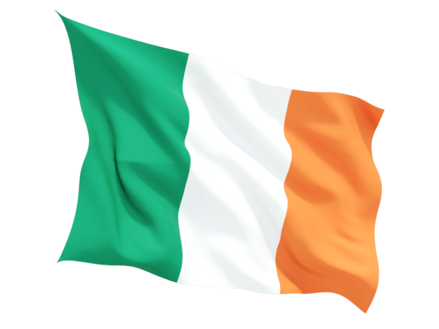

Ireland
The Flag

The flag of Ireland is a tricolour flag - three vertical bands of green, white, and orange. The flag was first used in 1848 but it was not regarded as the national flag until it was raised above the GPO during the 1916 Rising. The green colour on the flag symbolises Irish republicanism. The orange colour represents the supporters of William of Orange who settled in Northern Ireland in the 17th century. The white middle section is said to represent a truce between the two cultures and how they can live together in peace.
Map and Statistics
| Population | 4,600,000 |
|---|---|
| Population rank | 123rd |
| Area rank | 118th |
| Capital | Dublin |
| Main languages | English, Irish |